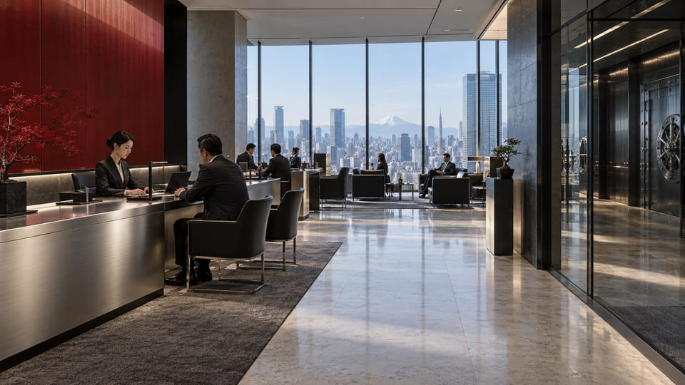

TOKYO / JP
Tokyo
Corporate headquarters
Group direction, financial relationships, and advanced technology development. The foundation of Arasaka's corporate identity.
Explore the organization
Regional directory
A global institution, connected through its regional presence.
Corporate & regional
TOKYO / JP
Corporate headquarters
Group direction, financial relationships, and advanced technology development. The foundation of Arasaka's corporate identity.
Explore the organizationNIGHT CITY / NC
Regional operations
A regional center linking protective services, financial interests, and technology operations to the wider group.
Explore the organizationDivision directory
Protecting people, facilities, and the interests that connect them.
Division overviewCapital that moves with the ambitions of an institution.
Division overviewExtending what can be preserved. Expanding what comes next.
Division overview